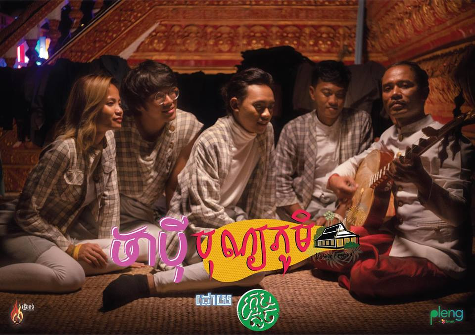
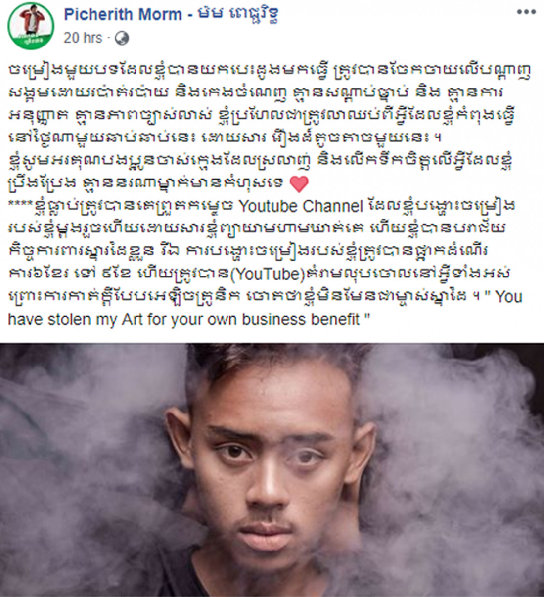
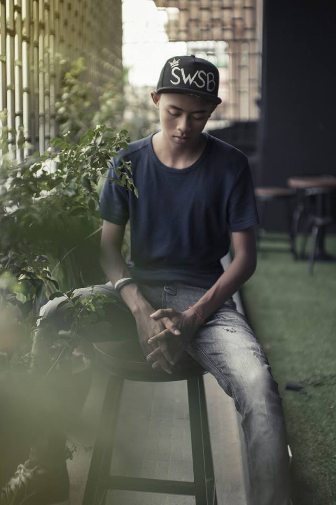
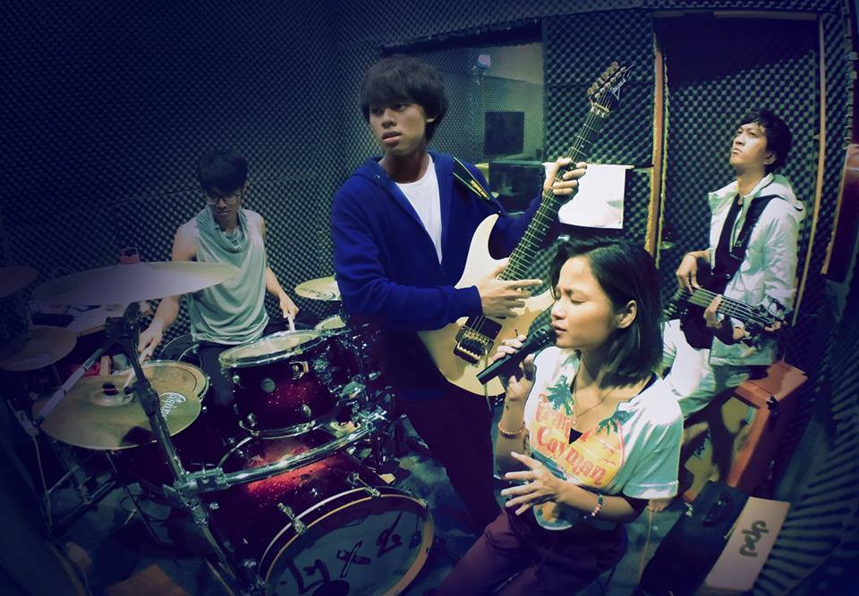
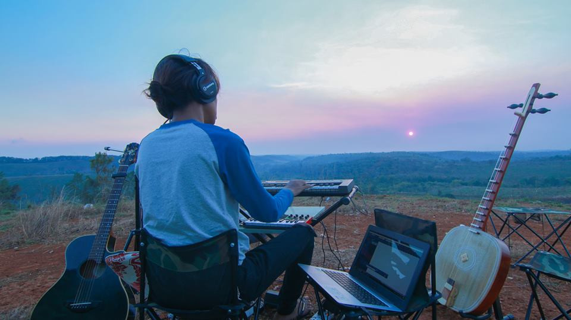

សិល្បះ
ម៉ម ពេជ្ជរិទ្ធ អស់កម្លាំងចិត្ត ក្រោមហេតុផលជាច្រើនក្នុងការបង្កើតបទ Original
Posted by Raksmey

ម៉ម ពេជ្ជរិទ្ធ ជាសមាជិកក្រុមតូច SmallWorld SmallBand ម្ចាស់បទ “ឆ្ងាយ” បានបង្ហាញនូវអារម្មណ៍ អស់សង្ឃឹម គ្មានកម្លាំងចិត្តនឹងតែងនិពន្ធតទៅទៀត ដោយសារតែមានជនឆ្លៀត ឱកាសជាច្រើនតែងតែបានយកបទចម្រៀងល្បីៗរបស់លោកជាច្រើនយកទៅបង្ហោះធ្វើអាជីវកម្ម ដើម្បីផលប្រយោជន៍ផ្ទាល់ខ្លួន។ មិនត្រឹមតែប៉ុណ្ណោះធ្វើឲ្យខាង Channel បានបិទការងាររបស់គាត់យ៉ាងយូរ រហូតស្ទើរមិនអាស្វែងរកទិន្នន័យបទចាស់ៗជាស្នាដៃរបស់ខ្លួនគឺ ម៉មពេជ្ជរិទ្ធ ដែលជាម្ចាស់បទចម្រៀង វិះនឹងអស់សិទ្ធនឹងរក្សា YouTube Channel របស់ខ្លួនដោយសារតែព្យាយាមហាមឃាត់ជនឆ្លៀតឱកាស។

ជាក់ស្តែងបន្ទាប់ ម៉ម ពេជ្ជរិទ្ធ បានធ្វើការបង្ហោះនៅលើបណ្តា FacebookPage ផ្លូវការរបស់លោកថ្ងៃនេះរៀបរាប់ថា៖ “ចម្រៀងមួយបទដែលខ្ញុំបានយកបេះដូងមកធ្វើ ត្រូវបានចែកចាយលើបណ្ដាញសង្គមដោយរប៉ាត់រប៉ាយ និងកេងចំណេញ គ្មានសណ្ដាប់ធ្នាប់ និង គ្មានការអនុញ្ញាត គ្មានភាពច្បាស់លាស់ ខ្ញុំប្រហែលជាត្រូវលាឈប់ពីអ្វីដែលខ្ញុំកំពុងធ្វើនៅថ្ងៃណាមួយឆាប់ឆាប់នេះ ដោយសារ រឿងដ៏តូចតាចមួយនេះ។ ខ្ញុំសូមអរគុណបងប្អូនចាស់ក្មេងដែលស្រលាញ់ និងលើកទឹកចិត្តលើអ្វីដែលខ្ញុំប្រឹងប្រែង គ្មាននរណាម្នាក់មានកំហុសទេ។ ខ្ញុំធ្លាប់ត្រូវបានគេព្រួតកម្ទេច Youtube Channel ដែលខ្ញុំបង្ហោះចម្រៀងរបស់ខ្ញុំម្តងរួចហើយដោយសារខ្ញុំព្យាយាមហាមឃាត់គេ ហើយខ្ញុំបានបរាជ័យកិច្ចការពារស្នារដៃខ្លួន រីឯ ការបង្ហោះចម្រៀងរបស់ខ្ញុំត្រូវបានផ្អាកដំណើរការ៦ខែ ទៅ ៩ខែ ហើយត្រូវបាន(YouTube)គំរាមលុបចោលនៅអ្វីទាំងអស់ ព្រោះការកាត់ក្តីបែបអេឡិចត្រូនិក ចោតថាខ្ញុំមិនមែនជាម្ចាស់ស្នាដៃ"។
យ៉ាងណាមិញខាងក្រុមការងាររបស់លោកគឺកញ្ញា លំអងពេជ្រ បានរៀបរាប់ជំនួសមកកាន់ Sabay ថា៖ វាជារឿងមួយគួរឲ្យឈឺចិត្តខ្លាំងណាស់ដែរ ព្រោះអ្នកធ្វើ ឬជាម្ចាស់កម្មសិទ្ធិបែរជាក្លាយទៅជាអ្នក Copy គេទៅវិញ ហើយរឿងកើតឡើងក៏មិនមែនលើកទី១ ទេ ដល់ពេលមានChannel តែសុំមិនបញ្ចេញឈ្មោះ បានទទួល Ideas Content ពីគាត់ហើយធ្វើការ Report ថាគាត់មិនមែនជាម្ចាស់ Channel ហ្នឹងទៅវិញ រួចទៅគាត់ត្រូវទទួលរងនៅការបិទ Channel របស់ខ្លួនរហូតដល់៩ខែ ទាក់ទងនឹងរឿងមួយកាលពី៣-៤ឆ្នាំកន្លងទៅ។ លោក ពន្លឺ ក៏ដូចគ្នាគេបិទតែមិនអាចយកបានមិនវិញធ្វើអីលែងបានតែម្តងខុសពី រិទ្ធដែលប្រើបានវិញតែគ្មានសិទ្ធផុសចម្រៀងចាស់ៗដែលខ្លួនធ្វើជាអ្នកធ្វើ វាពិតជាឈឺចិត្តណាស់"។
កញ្ញា លំអងពេជ្របន្ថែមទៀតថា៖ "តាមពិតអ្នកដែលធ្វើហ្នឹងគឺខ្មែរគ្នាឯង តើគួរទេដែលគាត់ធ្វើអីចឹង មួយទៀត ទោះបីយើងមាន Account ID តែគាត់យើងContent យើងទៅផុសមុនម្ចាស់របស់បែបហ្នឹង ចំណាប់អារម្មណ៍គឺច្បាស់ជាបានទៅគេហើយ ណាមួយពួកយើងមានភ្លេង App យើងត្រូវគោរពលក្ខខណ្ឌការងារ អីចឹងពួកយើងមានថ្ងៃដែលដាក់សម្រាប់ផុសនៅក្នុង Channel ផ្ទាល់យើង។ តែបើលេង App ចេញបានមួយថ្ងៃ ស្រាប់តែមានបទមួយរបស់យើងព្រោងព្រាតអីចឹងដល់ពេលយើងម្ចាស់ពិតចេញតាម Channel ខ្លួនបែបគេ Report ថាយើង Copy ពីគេ វាពិតជាអស់សំណើច និងអារម្មណ៍ក្នុងការបន្តដំណើរក្នុងការបង្កើតអ្វីដែលថ្មី ដោយមានការបារម្ភបានដោយគ្មានការទប់ស្កាត់ណាមួយល្អពួកយើងវាហាក់ចង់អស់ទឹកចិត្ត និងចង់បោះបង់ពិតមែន ។
រឿងដដែលដែលកញ្ញា បញ្ជាក់បញ្ហាចង់បោះបង់ គឺមិនមែនមកពីអ្នកគាំទ្រទេ តាមពិតពួកគាត់ពិតជាគាំទ្រខ្លាំងចំពោះពួកគាត់ដែលជាអ្នកចម្រៀង តែអ្វីដែលមិនអស់ចិត្តចំពោះអ្នកឆ្លៀតឱកាសរកផលប្រយោជន៍ពីម្ចាស់Channelពិត។ ចុងក្រោយសំណូមពរដល់អ្នកចូលចិត្តចម្រៀង និងស្តាប់ចម្រៀង Original Song របស់ក្រុមពួកគាត់ ឬក្រុមផ្សេងទេសូមចូលរួមស្តាប់ទៅលើ Channel ពិតប្រាកដរបស់សិល្បករមួយ។ បើស្តាប់តែ Channel ដែលលួចដូចលើកទឹកចិត្ត ឲ្យក្រុមឆ្លៀតឱកាសលួចធ្វើទៀត ព្រោះចម្រៀង Originalគឺចំណាយពេលយូរគួរសមក្នុងការផលិត ១បទបើលឿនអាចដល់ទៅ១ខែកន្លះទៅ៣ខែ ហើយបទខ្លះអាចឡើងដល់១ឆ្នាំ ក៏មានអីចឹងអាណិតអ្នកខំធ្វើពិបាកខ្លាំងណាស់ទម្រាំបាន១បទចេញជារូបរាង ហើយបើគេយកទៅCopyតែមួយទេ គឺមិនស្រួលទេវាអ្នកធ្វើឲ្យវិស័យចម្រៀងOriginal អាចធ្លាក់ចុះទៅបានដោយគ្មានកម្លាំងចិត្តធ្វើបន្តទៀត"៕
 